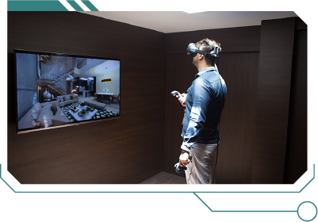
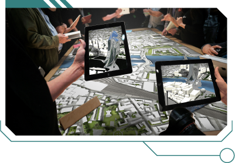
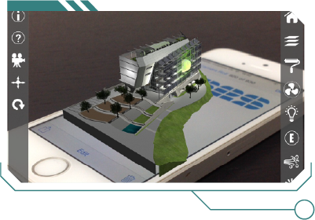
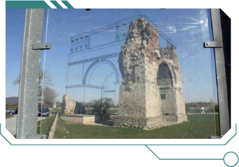
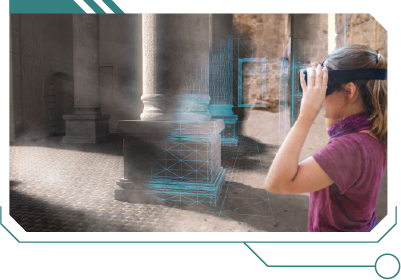
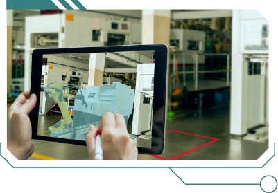
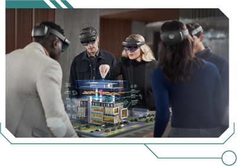

Este conteúdo abordará as experiências imersivas em espaços efêmeros.
“E tudo que era efêmero se desfez. E ficaste só tu, que é eterno.” (Cecília Meireles)
Olá! Eu sou o Ephémeros. Assim como os espaços efêmeros, eu também sou temporário e fui projetado para existir por um período limitado de curta duração. Neste vídeo, você vai entender como a tecnologia pode ser inserida nesses espaços efêmeros e de que forma o design pode se beneficiar deles.
Vamos lá?
Experiências imersivas
Vou começar falando de realidade virtual, que é uma tecnologia capaz de criar ambientes simulados e interativos. A RV leva o usuário a experiências imersivas, impactantes e envolventes em um mundo virtual, ou seja, não físico. É como uma viagem sem sair do lugar. O limite é a imaginação. Entre as características que fazem parte da realidade virtual, há a imersão, a interação, a sensação de presença, a personalização e a interconexão entre pessoas e ambientes.
Unindo essa versatilidade à criatividade do designer de interiores, a realidade virtual é uma forma, inclusive, de baratear custos na hora de criar um ambiente. Afinal, tudo aquilo que seria físico pode se tornar virtual. Feiras, exposições em museus, eventos de marketing e promoção, entre outros, são possibilidades de aplicação. Com o uso da RV, os expositores podem atrair mais visitantes, aproveitando a curiosidade das pessoas por interação.
Também é possível maximizar os espaços, promovendo, por exemplo, um tour virtual em um apartamento, mesmo sendo um espaço pequeno. O mais importante é que a experiência seja memorável. Já a realidade aumentada combina elementos virtuais com elementos físicos do mundo real. Dessa forma, os usuários estão conscientes do espaço ao seu redor. Mas a RA traz componentes digitais gerados por computador.
Para criar objetos virtuais sobrepostos ao ambiente real, é necessário utilizar dispositivos como smartphones, tablets ou óculos de RA. Entre os usos mais comuns da realidade aumentada, estão as exposições de arte, onde é possível ter mais informações sobre uma obra ou um artista por meio de um dispositivo. Outro exemplo é a visitação a construções em ruínas, onde é possível visualizar como eram seus formatos originais por meio da tecnologia.
Já na realidade mista, RM, a experiência do usuário pode iniciar no mundo real e ter algum conteúdo digital adicionado, interagindo diretamente com ele. Ou, ao contrário, começar no mundo virtual e terminar em uma interação física. Por exemplo, projeções de maquetes virtuais em 3D disponíveis em empreendimentos que estão à venda. O visitante pode ver como será o condomínio de forma virtual e depois explorar o modelo do apartamento físico. Assim, ocorre uma imersão completa.
Mapeamento
Essa é uma tecnologia que faz uma análise e mapeia superfícies. Nessas superfícies, são exibidas criações, imagens ou vídeos sem riscos de distorções. Em espaços efêmeros, esse mapeamento pode ser feito através de projeções em qualquer superfície tridimensional. Entre as vantagens de se optar por essa tecnologia, está o custo, que é mais baixo em relação a outras tecnologias.
Além disso, encantam o usuário por serem altamente imersivas. Um exemplo que pode ser visto em grandes metrópoles é a projeção de imagens na superfície irregular de fachadas de edifícios.
Interatividade
A interatividade em espaços efêmeros busca criar uma conexão entre os usuários e o ambiente. Isso pode acontecer de várias formas, como através de gestos, toques ou odores, ou em experiências mais complexas que envolvam uma maior imersão.
O reconhecimento facial ao chegar à casa de alguém e esperar ser atendido e os totens que exibem realidade aumentada ao usuário para interação são algumas aplicações possíveis para essa tecnologia.
Integração: wi-fi e conectividade
A conectividade permite que os visitantes tenham acesso imediato a informações e contextos do espaço. Por isso, é importante ter disponível uma infraestrutura com rede de wi-fi de alta velocidade e conexão confiável com a internet.
Além disso, a manutenção e o monitoramento das redes e dos pontos de acesso móveis também devem ser realizados. As feiras de tecnologia e inovação e as conferências transmitidas ao vivo são exemplos de espaços efêmeros que precisam de todo o aparato de conectividade para que a experiência do usuário seja satisfatória.
Dados e aplicativos
Por fim, chegamos à etapa que permite avaliar o desempenho dos eventos e tomar decisões futuras para melhorar a experiência dos usuários.
É hora do famoso feedback. A coleta e a análise de dados é o que vai permitir criar experiências cada vez melhores que superem as expectativas da comunidade. Essa coleta pode ser realizada por meio de aplicativos ou diretamente nas redes sociais, em ferramentas como enquetes ou formulários que presenteiam o participante com um material especial, como um e-book.
Estamos chegando ao fim do nosso encontro e da minha vida útil. Como todos já sabem, eu também sou um personagem efêmero e minha duração está terminando.
Que essas informações possam auxiliar você, estudante, a criar suas próprias estratégias de utilização de espaços efêmeros e explorar suas potencialidades. Afinal, o que você aprendeu aqui não é efêmero; é duradouro. Continuei explorando. Até logo!
As experiências imersivas por meio das realidades virtual, aumentada e mista são as grandes novidades em feiras e eventos. Essas realidades são amplamente requisitadas por empresas expositoras para suas aplicações em estandes (ou stands), a fim de chamar mais atenção e cativar o público por intermédio da interação.
Aprenda mais a respeito dessas experiências imersivas a seguir:
A realidade virtual (RV) é uma tecnologia capaz de criar ambientes simulados e interativos, garantindo aos usuários experiências imersivas memoráveis e envolventes em um mundo “não físico”.
Para que o usuário mergulhe em sua tecnologia, algumas características fazem parte da RV. A imersão é a sua principal característica, pois oferece a sensação de presença do usuário em um ambiente virtual e isso se torna possível por meio de dispositivos como óculos de RV e fones de ouvido espacial. Ambos trabalham juntos para bloquear os estímulos do mundo físico e substituí-los pelos estímulos virtuais.
Dessa forma, esses estímulos virtuais garantem outra característica da RV, que é a de interação, isto é, o usuário interagirá com o ambiente virtual utilizando controles de movimento, gestos ou comando de voz. A sensação de presença é outra característica presente na RV. Mapeamentos de movimentos e renderização em tempo real garantem a sensação de presença do usuário em um espaço totalmente digital, permitindo-o ignorar a realidade física ao redor. Os ambientes virtuais garantem outra característica, que é a personalização. A RV é altamente personalizável e capaz de atender a diferentes necessidades – podendo-se arriscar a dizer que sem limites –, ajustando suas configurações e seus controles, áudios e gráficos.
Na maioria dos casos, essa interação com a RV acontece de forma interconectada, ou seja, o usuário está conectado e interagindo com outras pessoas em ambientes virtuais compartilhados.
Todas essas características apresentadas tornam a realidade virtual uma tecnologia poderosa e versátil, com uma ampla variedade de aplicações, e sua utilização em feiras e exposições não é exceção.
O uso da RV em espaços efêmeros garante um impacto memorável ao usuário e vantagens para os expositores. Confira algumas dessas vantagens:
A tecnologia em RV ainda é uma novidade para muitos e as pessoas são naturalmente curiosas, sendo atraídas por novas experiências. Por isso os equipamentos de interação da RV conquistam um maior número de visitantes.
Espaços efêmeros nem sempre são grandes espaços, muitas vezes é um pequeno estande e, por isso, a RV permite que você ofereça uma experiência que ultrapasse esse limite de espaço físico. O expositor pode garantir um tour virtual em um apartamento de 200 m², mesmo que o usuário esteja em um estande de 10 m².
Na maioria das vezes, os espaços efêmeros são de empresas que estão expondo o seu trabalho em feiras e eventos. Por isso a RV, ao oferecer uma experiência única em seu estande, garante uma memória duradoura aos visitantes, o que aumenta a chance de o usuário lembrar da marca ou do produto da empresa.

Interação com realidade virtual
Fonte: Halo Notoriedade Empresarial (2024?)
Fotografia de um homem no centro de uma sala que tem paredes escuras e uma televisão. O homem está utilizando óculos de realidade virtual e segura em suas mãos dois dispositivos de tecnologia, que permitem a interação com a tela que está à sua frente. Na tela, é possível visualizar um ambiente residencial, que demonstra a mesma imagem que o homem está visualizando nos óculos de realidade virtual.
A realidade aumentada (RA) também oferece um contexto de integração de tecnologia em espaços efêmeros, viabilizando uma abordagem um pouco diferente, mas complementar à da RV.
Ao contrário da RV, a RA não substitui completamente o ambiente físico, e sim combina os elementos virtuais com os elementos físicos do mundo real. Isso significa que os usuários estão conscientes do espaço ao seu redor, porém a tecnologia da RA traz componentes digitais sobrepostos, que são aprimoramentos gerados por computador sobre uma realidade existente. Para visualizar os componentes digitais, é necessário utilizar dispositivos como smartphones, tablets ou óculos de RA.
A RA utiliza objetos virtuais sobrepostos a um mundo real, mas tais objetos são estáticos, destinados apenas à observação do usuário.
A RA pode ser usada para fornecer informações contextuais sobre o ambiente físico, como, por exemplo, receber informações sobre uma obra ou um artista em uma exposição de arte. Pode, também, oferecer objetos virtuais disponíveis em 3D (tridimensionais) para manipulação dos usuários por meio de dispositivos. Confira exemplos nas imagens:

Realidade aumentada em eventos
Fonte: Unique (c2007-2024)
Fotografia de uma mesa retangular grande ao centro e, sobre ela, uma impressão de uma cidade vista de cima, com ruas, prédios e arborização. No entorno da mesa há dez pessoas e algumas com um tablet em mãos. No tablet é reproduzida a imagem impressa na mesa, porém mostrando em realidade aumentada, o volume de prédios e outros elementos da cidade.

Realidade aumentada em aplicativo de celular
Fonte: Souza (2019)
Imagem ilustrada da tela de um smartphone, deitado, e sobre ele a imagem de um prédio em realidade aumentada. O prédio, digitalmente, sobressai à tela e cria o seu volume visível fora da tela do smartphone.
A experiência mais impactante da RA é misturar as realidades, em que elementos físicos e virtuais coexistem e interagem entre si. Observe:

Realidade aumentada em prédios históricos
Fonte: Wormald (2023)
Fotografia externa de um prédio em ruína, com uma projeção em linhas pretas da continuidade do prédio, mostrando por meio da realidade aumentada como seria o seu formato original.

Realidade aumentada para contar histórias
Fonte: Wormald (2023)
Imagem ilustrada de uma menina, no canto direito, usando óculos de realidade aumentada e, no restante da imagem, projeções de colunas largas de um prédio do período clássico cuja história é contada com a realidade aumentada.
A realidade mista (RM), como o próprio nome já diz, combina elementos da realidade virtual e da realidade aumentada para criar uma experiência ainda mais impactante e interativa com o usuário. Na RM ocorre a união do digital e do físico de forma mais fluida, oferecendo uma integração maior do usuário com o ambiente, seja real, seja virtual.
A experiência da RM pode iniciar no mundo real, em que o usuário permanece em seu ambiente físico enquanto elementos digitais se integram e interagem diretamente com ele; e no mundo virtual, em que o ambiente físico é completamente substituído por um ambiente digital imersivo, no qual o usuário se encontra totalmente envolvido e interage apenas nesse novo espaço
A RM pode ser aplicada em espaços efêmeros de diversas maneiras. Em exposições temporárias, pode-se explorar elementos virtuais que interagem com objetos físicos, como, por exemplo projeções holográficas, projeções de maquetes virtuais em 3D de empreendimentos à venda, projetos ou mobiliários, os quais os visitantes possam explorar e compreender melhor o design da proposta. Confira exemplos:

Realidade aumentada para objetos
Fonte: Blink-iT (c2020)
Fotografia de um ambiente de fábrica ao fundo e, em primeiro plano, duas mãos segurando um tablet. Na tela do tablet está sendo projetada a imagem de uma máquina em realidade aumentada, mostrando o elemento de forma virtual, onde ele ficaria posicionado no espaço físico.

Realidade aumentada para arquitetura
Fonte: Stambol (2023)
Imagem ilustrada de cinco pessoas em uma sala e em volta de uma mesa. Todos estão utilizando óculos de realidade virtual e observando na mesa uma projeção de um edifício em realidade aumentada.
Resumidamente, portanto, as experiências imersivas são:
Combinar arquitetura, design de interiores, criatividade e tecnologia para transformar espaços efêmeros não é uma tarefa fácil. Sob esse aspecto, o profissional de design de interiores atua como facilitador da criação e execução desse tipo de espaço, do qual não deve ser apenas considerado seu caráter físico, mas também a sua interação com o usuário. Por isso, as interações imersivas com as realidades virtual, aumentada e mista enriquecem os espaços efêmeros no mundo da arquitetura e do design de interiores. Essas tecnologias são capazes de passar informações mais claras aos usuários, proporcionando experiências enriquecedoras e memoráveis, criando oportunidades para a expressão criativa da área do design e colaborando para a proximidade com o usuário.
O mapeamento não é uma novidade no mercado de tecnologia, mas vem avançando e aprimorando seus formatos de apresentação. Trata-se de uma tecnologia que, com a ajuda do computador, faz uma análise e o mapeamento de uma superfície, para que nela sejam exibidas criações, imagens ou vídeos sem que haja distorções. A superfície de mapeamento não precisa ser lisa; o mapeamento pode ser aplicado em superfície irregular, piso, parede e teto.
O mapeamento em espaços efêmeros pode ser útil para exposições, planejamento urbano, turismo, preservação do patrimônio cultural e promoção de eventos, garantindo ao espectador um melhor entendimento transitório desses espaços e dos eventos.
O espaço efêmero com mapeamento pode ser trabalhado com projeção, isto é, imagens ou vídeos são projetados em qualquer superfície tridimensional, transformando telas comuns em telas dinâmicas sobrepostas ao ambiente físico. O mapeamento de realidade aumentada pode utilizar elementos físicos e/ou virtuais sobrepostos a superfícies, envolvendo a interação direta com o usuário.
O trabalho de mapeamento e sua representação na superfície criam ilusões impressionantes nos espaços efêmeros, provocando experiências verdadeiras e inovadoras, que desafiam as fronteiras entre o físico e o digital.
São inúmeras as vantagens em seu uso: a personalização e a flexibilidade dos espaços efêmeros estão entre as principais, pois permitem que a superfície seja dinâmica e se altere com facilidade. O mapeamento e sua representação na superfície são altamente imersivos e envolventes para o usuário e podem ser reutilizados com facilidade em diferentes eventos e exposições. Por isso, o mapeamento torna-se um recurso tecnológico mais econômico em espaço e recursos, pois, em comparação às instalações tradicionais de espaços efêmeros, que necessitam de espaços físicos específicos e instalação de grandes equipamentos, o mapeamento é mais eficiente e torna também as escolhas mais eficientes e ecologicamente conscientes.
Mapeamento digital de um mapa
Fonte: Laborg (c2024)
Fotografia de doze crianças ao redor de uma mesa grande retangular. A mesa é uma grande tela com um mapa que está sendo reproduzido por meio da projeção sobre sua superfície.
Mapeamento digital em uma fachada de edifício
Fonte: Bohrer (2017)
Fotografia noturna que mostra a projeção de imagens na superfície irregular de uma fachada de edifício por meio do mapeamento.
Mapeamento digital em uma exposição de arte
Fonte: Tecnologias e Eventos (2019)
Fotografia de uma projeção de imagens sobre o piso e as paredes de um ambiente. Neste ambiente estão pessoas no escuro observando a exposição de arte, cujas imagens são expostas por meio de mapeamento.
A interatividade em projetos de design de espaços efêmeros refere-se à capacidade de envolver os visitantes e usuários de forma ativa e participativa, permitindo que eles interajam com o ambiente físico e os elementos virtuais de maneira significativa. Essa interação pode ocorrer de várias formas, desde simples gestos ou toques até a participação em experiências mais complexas e imersivas. Em resumo, a interatividade em espaços efêmeros busca criar uma conexão entre os usuários e o ambiente por meio das tecnologias.
A interatividade tecnológica pode ser integrada em espaços efêmeros com sensores de movimento, reconhecimento facial e gestual, aplicativos de realidade aumentada, instalações multissensoriais e dispositivos de informações ou feedbacks em telas interativas.
Interatividade digital por meio de telas touchscreen
Fonte: Skyline Inovação e Produções (s. d.)
Fotografia de um homem utilizando uma grande tela retangular que tem a altura de sua cintura. A tela apresenta imagens e é interativa com touchscreen, e o homem está com a mão sobre a tela.
Interatividade digital para vestuário
Fonte: Visual Atelier 8 (2019)
Fotografia de uma mulher parada em frente a um espelho vertical de um ambiente. No espelho está a projeção da mulher em realidade aumentada, para que seja possível experimentar as roupas no formato digital.
Reconhecimento facial
Fonte: Verzani e Sandrini (s. d.)
Fotografia um homem parado em frente a uma tela pequena que está na altura dos seus ombros. A tela está fazendo o reconhecimento facial deste homem.
A conectividade em espaços efêmeros maximiza o potencial da experiência dos visitantes. Ela permite que os visitantes tenham acesso imediato a informações e contextos do espaço, conectem-se com os dispositivos de interação, compartilhem suas experiências, além de coletar e analisar dados do expositor.
Para garantir uma conectividade eficaz em espaços efêmeros, é importante implementar uma infraestrutura robusta que possa suportar a demanda de conectividade dos visitantes e fornecer uma experiência sem interrupções. Por isso, é essencial fornecer rede de wi-fi de alta velocidade, conexão à internet confiável, manutenção e monitoramento das redes e pontos de acesso móveis.
Projetos que dependem de uma rede wi-fi requerem toda essa estrutura, como, por exemplo, eventos de conferências ao vivo, exposições de arte digital, eventos de entretenimento, shows ao vivo ou feiras de tecnologia e inovação.
Em todos esses casos, uma infraestrutura de conectividade confiável é essencial para garantir uma experiência positiva e segura aos usuários.
A coleta e análise de dados em espaços efêmeros são uma prática essencial para compreender o comportamento dos visitantes, avaliar o desempenho do evento ou da exposição e tomar decisões a partir das informações coletadas para melhorar a experiência dos participantes.
Para a coleta de dados em espaços efêmeros pode-se utilizar ferramentas de sensores e dispositivos, aplicativos móveis, interações digitais ou até mesmo redes sociais. Desta forma, com esses dispositivos, o expositor coleta dados sobre comportamento do usuário, compartilhamentos, feedbacks, participação de enquetes ou faz download de materiais.
Tela para pesquisa de satisfação
Fonte: Hansab (s. d.)
Fotografia da mão de um homem tocando em uma tela touchscreen. A tela está em um totem vertical e contém a mensagem de uma mão positiva e negativa, para que possa ser marcada a opção desejada e realizar a pesquisa de satisfação de usuários.
Pesquisa de satisfação em aplicativo de celular
Fonte: Portal MT (2023)
Fotografia das mãos de uma pessoa segurando um smartphone, cuja tela está apresentando as informações de uma pesquisa de satisfação, e ao fundo da imagem está um cartaz com informações da empresa e um QR code para acesso à pesquisa de satisfação.
Com a entrada em vigor da Lei Geral de Proteção de Dados Pessoais (LGPD), torna-se crucial que todos os envolvidos com o tratamento de dados pessoais estejam atentos à proteção da privacidade dos indivíduos. Isso significa que é preciso limitar o uso dos dados de acordo com a finalidade, adequação, segurança e necessidade das informações e sempre com o consentimento do titular dos dados.
Para encerrar esta exploração sobre os espaços efêmeros, é essencial destacar o papel significativo das realidades virtual, aumentada e mista na criação de experiências inovadoras e envolventes com os usuários. A criação de mundos digitais imersivos abre fronteiras inéditas para o design, permitindo aos visitantes explorarem novos conceitos e enriquecerem seu ambiente físico com camadas digitais de informação, novas formas de interação e aprendizado.
À medida que você explora e avança no potencial das tecnologias em espaços efêmeros, é essencial que reconheça o impacto transformador na forma com que você, como designer de interiores, pensa, projeta e executa esses espaços temporários.
A interatividade tecnológica, aliada à conectividade wi-fi e à análise de dados, oferece uma abordagem holística para o design e a gestão de espaços efêmeros, permitindo uma compreensão mais profunda do comportamento do público e das oportunidades de melhoria. Ao adaptar estratégias com base em insights obtidos, os organizadores, expositores e designers de interiores podem otimizar a experiência dos visitantes e maximizar o impacto desses espaços temporários.